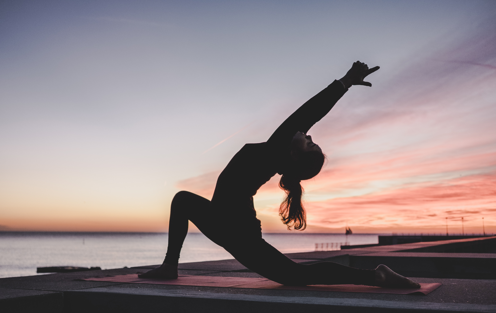

Los ejercicios que se ejecutan durante una sesión de pilates contribuyen a la higiene postural. Con ello, se mejora la posición del abdomen, del pecho y de los hombros. De esta forma, se consigue una postura correcta al estar de pie, caminando o sentado.
Así, se ayuda a evitar los dolores de espalda que acarrean el mantener posturas corporales incorrectas.
Gran parte de los ejercicios de pilates se basan en el movimiento y estiramiento del cuerpo, lo que permite el alargamiento de los músculos. Por tanto, esto provoca ir ganando, poco a poco, flexibilidad corporal.
El pilates es una de las modalidades más recomendadas para las personas con problemas en las articulaciones o que pasan demasiado tiempo sentados. Durante las clases de pilates se mejora la movilidad de las articulaciones, lo que hace que con el tiempo
se gane movimiento en ellas y se pierda rigidez.
Los ejercicios en pilates se complementan con la respiración para ayudar a relajar el cuerpo y facilitar el movimiento. Como consecuencia de esta práctica, las personas que hacen pilates controlan mejor su respiración durante su día a día.
El pilates es un método para la recuperación de lesiones de rodilla como roturas de menisco o de ligamentos cruzados. El proceso debe pasar por varias fases, siendo lo primero eliminar el dolor y comenzar a darle movimiento a la articulación. Después,
se debe fortalecer la rodilla para que vuelva a tener un movimiento fluido hasta que permita realizar las actividades o ejercicios cotidianos.